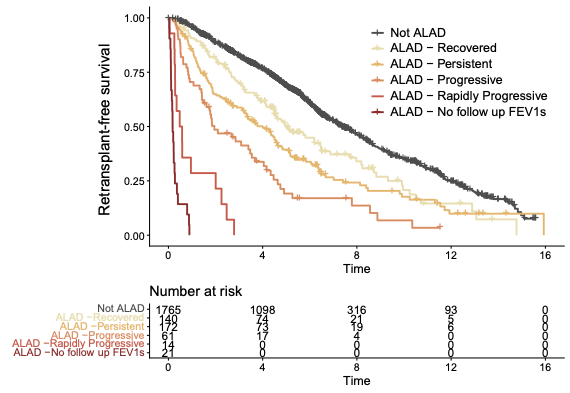
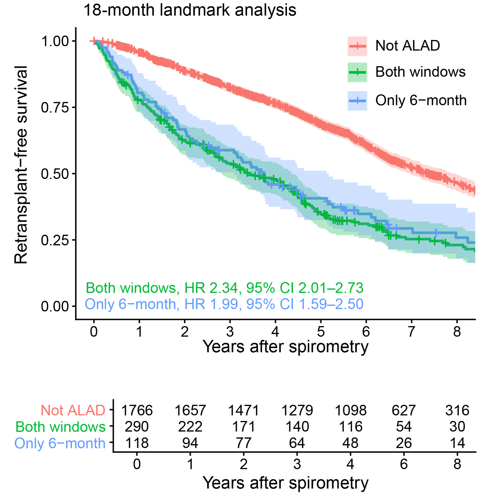
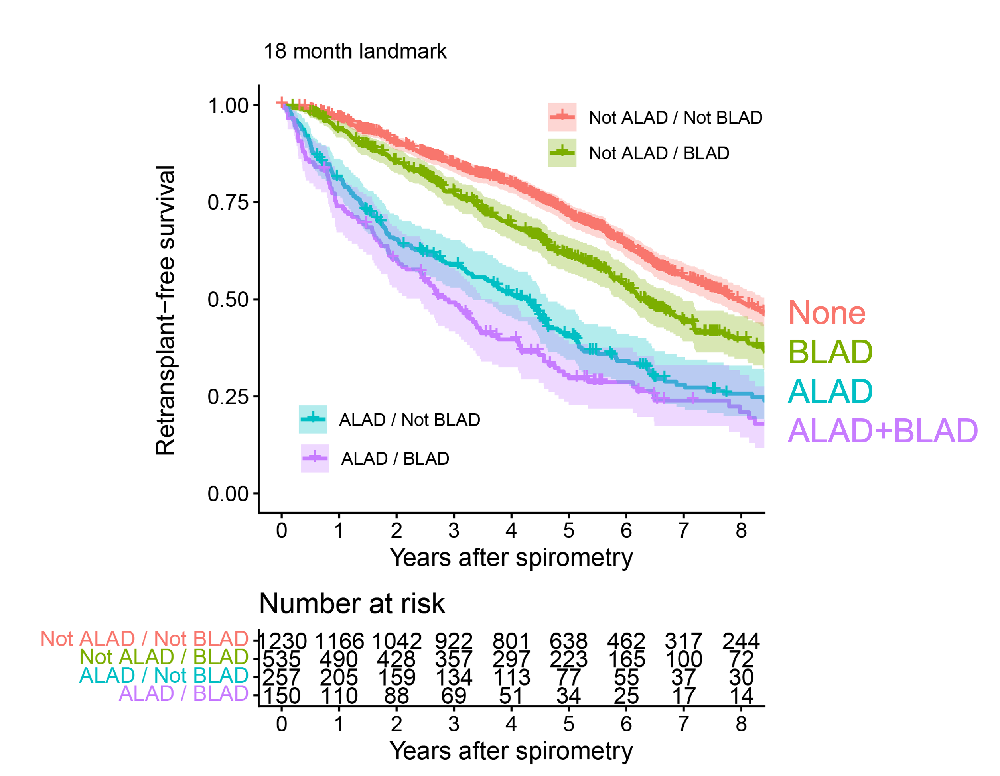
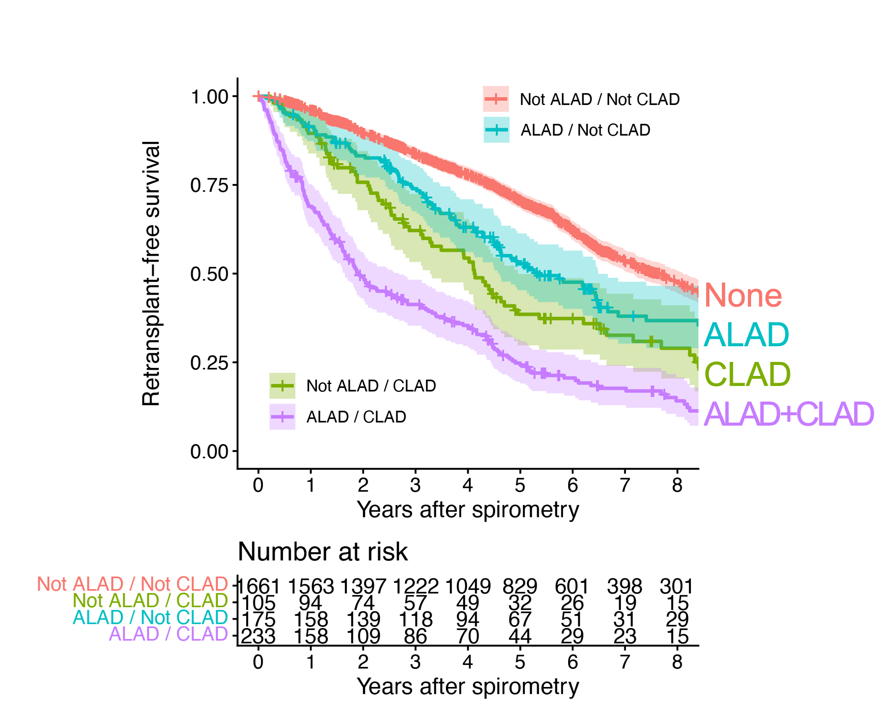
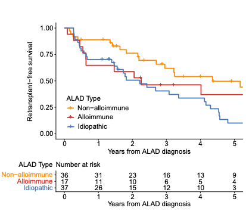
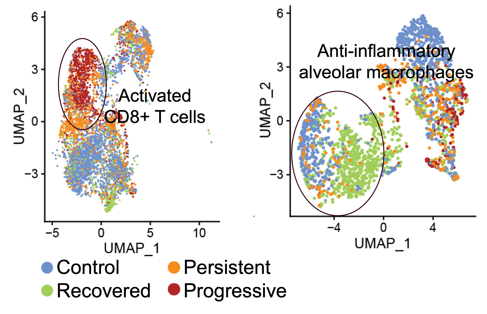

ALAD: an emerging framework for early lung allograft dysfunction
This post summarizes the 2026 ISHLT consensus definition of Acute Lung Allograft Dysfunction (ALAD), its validation in the LTOG cohort, the major etiologic categories, and what the molecular data are beginning to reveal.
2026 consensus definition
Acute Lung Allograft Dysfunction, or ALAD, is meant to give transplant teams a common language for an important clinical problem: a meaningful drop in lung function after transplant that may signal graft injury.
The 2026 ISHLT consensus definition describes ALAD as a decline in FEV1 of at least 10% compared with the patient’s maximum FEV1 from the prior six months. That shift matters because it standardizes when a patient should be flagged for closer evaluation.
ALAD is not a diagnosis by itself. It is a risk state. When a patient meets ALAD criteria, the next step is to look for the reason: rejection, infection, airway problems, aspiration, medication toxicity, malignancy, or another process affecting the graft.
Why this matters: a shared definition makes it easier to compare management across centers, enroll patients into trials, and study whether early trajectories predict longer-term graft outcomes.
Validation in LTOG data

ALAD trajectories at 90 days were strongly associated with long-term graft outcomes.
Alternative defintions were assessed based on concordance with graft failure (death or retransplant) risk. Concordance rates how well a statistical model correctly ranks people by risk. This validation work showed that a 10% threshold for FEV1 decline struck a useful balance between sensitivity and specificity. Thresholds in roughly the 9% to 15% range performed similarly, but 10% was a practical and well-supported choice.
The six-month baseline window also performed better than a shorter lookback window. It captured slower declines that might otherwise be missed, while keeping prognostic performance strong. In other words, the longer window helps identify the “slow-burn” cases that can still carry real risk.

The six-month window captures slow-burn declines without sacrificing prognostic power.
Two related analyses show that ALAD remains important when it is considered alongside baseline lung allograft dysfunction (BLAD) or chronic lung allograft dysfunction (CLAD). While BLAD was associated poor outcomes compared to no-BLAD, ALAD was associated with increased risk independent of BLAD status.
Similarly, ALAD was an important risk factor for graft failure whether on not the recipient had CLAD. Patients with both signals tend to have the worst outcomes, indicating that ALAD is a distinct risk state.
While 40% of recipients who were in the state of ALAD went on to recovery, persistence or progression were common. ALAD conferred a 4.9-fold increased risk of retransplantation or death.

ALAD and BLAD each identify higher-risk groups.

ALAD and CLAD are both independent predictors of graft failure.
Clinical takeaway: ALAD confers a strong risk of graft failure. Outcomes 90 days after ALAD onset further stratify risk of death or retransplant.
ALAD etiologies

ALAD spans alloimmune, non-alloimmune, and idiopathic causes.
Alloimmune ALAD: injury driven by the immune system, including acute cellular rejection and antibody-mediated rejection.
Non-alloimmune ALAD: infection, aspiration, fluid overload, pleural effusion, pneumothorax, or airway complications. (Debate persists about whether diaphragm dysfunction, respiratory muscle weakness, frailty, pain, or weight gain cause ALAD.)
Idiopathic ALAD: cases where no clear cause is found despite a thorough workup.
Emerging data from groups in Vienna and San Francisco show that idiopathic ALAD does not imply low-risk. In the available data, idiopathic and alloimmune ALAD both appear to be high-risk categories, and ALAD can also coexist with chronic lung allograft dysfunction (CLAD).
Practical point: Idiopathic and alloimmune ALAD indicate significantly increased risk, while a non-alloimmune cause can be reassuring.
Molecular diagnostics and mechanisms

Single-cell profiling shows activated CD8+ T cells and reduced anti-inflammatory alveolar macrophages during ALAD.
Airway transcriptomic work has identified gene-expression signatures that track with injury and outcome. One example is the Airway Injury Score (AI2), which has been reported to predict mortality across cohorts. The signal appears to come from epithelial injury and inflammatory activation within the airway.
Single-cell studies add another layer. During ALAD, investigators have seen changes in cell composition in airway brushings and bronchoalveolar lavage fluid, including expansion of activated CD8+ T cells, reductions in anti-inflammatory alveolar macrophages, and epithelial programs that look like ongoing injury. In some studies, the molecular features of ALAD overlap with rejection-associated patterns that are also seen in CLAD.
The broad biologic theme is imbalance: too much immune activation, too little protective macrophage activity, and an epithelial compartment that appears to be under stress. That combination may help explain why some episodes of ALAD recover while others progress to chronic dysfunction.
Bottom line: molecular profiling may eventually help distinguish reversible injury from episodes likely to progress.
Conclusions / take-aways
The 2026 consensus definition gives the field a simple and useful rule: a 10% decline in FEV1 from the maximum value in the prior six months should trigger an evaluation for ALAD.
ALAD is a state of risk, not a distinct disease entity. It should prompt a careful search for cause, because the event is associated with substantially higher graft-failure risk and can coexist with CLAD.
The 90-day trajectory after ALAD identification helps stratify prognosis. Recovery is seen in 40% of recipients, but persistent or progressive dysfunction identifies a much higher-risk group.
The molecular data show that ALAD is an active biologic event involving epithelial injury, immune activation, and shifts in airway cellular composition. Because ALAD allows early identification and has meaningful short-term outcomes, it is a promising target for clinical trials.